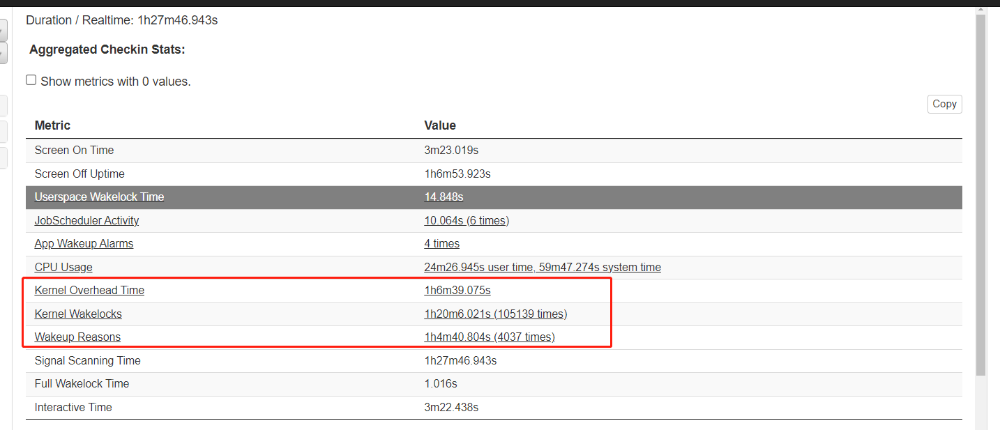
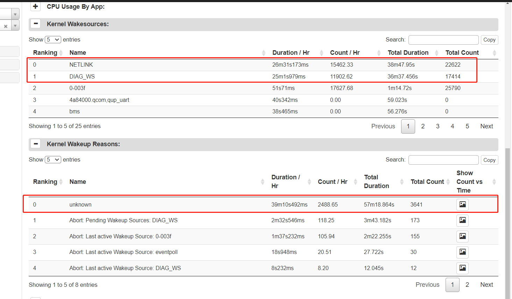

README¶
功耗分析,针对6650 低电流18ma,展开分析
捉取log¶
adb shell dumpsys batterystats –reset
adb shell dumpsys batterystats –enable full-wake-history
adb shell dumpsys battery unplug
打开mtklog,或者高通 Logkit ,捉取log, 不用打开这个,不然kernel频繁唤醒
复现问题,大概半小时后,
adb bugreport bugreport.zip
adb bugreport > bugreport.txt ;For devices 6.0 and lower:
adb shell dumpsys batterystats > batterystats.txt
echo mem>/sys/power/state ,强制休眠
BatteryHistorian 分析捉取bugreport¶
打开 BatteryHistorian,分析网站,上传bugreport分析
kernel 很密,感觉没有怎么睡下去


关闭Logkit,发现就不密了.
说明软件基本没有大问题,但是发现,phone scanning 一直在搜,难道modem没休眠?

使用移远开发板,打开飞行模式,捉取图如下
发现没有phone scanning,并且phone state 是off状态

使用A6650版本 ,打开飞行模式测试一把,体现如下
所以估计还是哪个器件漏电.要具体硬件帮忙量一下了
phone scanning 没有了.
phone state = off了.

使用移远给的方法捉取log, 获取高通休眠前后Log.简易带bugreport.up7.bat¶
@echo off
::::::::::::::::::::::::::::::::::::::::::::::::::::::::::::::::::::::::::::::::::::::::::::
:: 前置条件：开飞行模式，关闭 wifi bt gps, 并设置 Display->Sleep 时间改为 15s
:: 1. 脚本使用就是先连上手机，确认 adb 能连接，然后在 window 下双击脚本，等脚本等待时，
:: 2. 断开 USB, 休眠等 5 分钟
:: 3. 然后连上 USB, 在终端脚本上按任意键，完成 log 抓取
::::::::::::::::::::::::::::::::::::::::::::::::::::::::::::::::::::::::::::::::::::::::::::
set cmd1=logcat -d
set cmd2=dmesg -c
:: DOS批处理%time%小时的值小于10的时候在这个值前加0
if "%time:~0,2%" lss "10" (set hh=0%time:~1,1%) else (set hh=%time:~0,2%)
set suspendtime=%DATE:~0,4%%DATE:~5,2%%DATE:~8,2%-%hh%%TIME:~3,2%%TIME:~6,2%
echo %suspendtime%
@echo on
adb wait-for-device
adb root
adb wait-for-device
:: 作用：AP 是否进入睡眠
:: 检查rpm_stats是否进入vdd min或者xo/no shutdown。使用下面的命令检查rpm lower power mode count:
::如果vmin的count是0，则表明设备从来没有进入vdd min；non-zero则说明设备进入过vdd_min。
adb shell cat /sys/kernel/debug/rpm_stats > %suspendtime%.rpm_stats.suspend.txt
adb shell cat /sys/power/system_sleep/stats > %suspendtime%.system_sleep.suspend.txt
adb shell cat /sys/power/soc_sleep/stats > %suspendtime%.soc_sleep.suspend.txt
:: 作用：判断哪个 CPU 没有睡眠
adb shell cat /sys/kernel/debug/rpm_master_stats > %suspendtime%.rpm_master_stats.suspend.txt
adb shell cat /sys/power/rpmh_stats/master_stats > %suspendtime%.master_stats.suspend.txt
:: 作用：查看哪路 CLK 没关
adb shell "echo 1 > /sys/module/kernel/parameters/initcall_debug"
adb shell "echo 1 > /sys/kernel/debug/clk/debug_suspend"
adb shell "echo 1 > /sys/module/msm_show_resume_irq/parameters/debug_mask"
adb shell "echo 32 > /sys/module/msm_pm/parameters/debug_mask"
adb shell "echo 8 > /sys/module/mpm_of/parameters/debug_mask"
::查看唤醒源：
:: adb shell "echo 1 > /sys/module/kernel/parameters/initcall_debug"
:: adb shell "echo 1 > /sys/kernel/debug/clk/debug_suspend"
adb shell "echo 0 >/sys/module/qpnp_rtc/parameters/poweron_alarm"
:: adb shell "echo 1 > /sys/module/msm_show_resume_irq/parameters/debug_mask"
:: adb shell "echo 32 > /sys/module/msm_pm/parameters/debug_mask"
:: adb shell "echo 8 > /sys/module/mpm_of/parameters/debug_mask"
:: adb shell "echo 0x2 > /sys/module/ipc_router_core/parameters/debug_mask"
:: bugreport
adb shell dumpsys batterystats --reset
adb shell dumpsys batterystats --enable full-wake-history
:: 休眠锁 # 注，拉出来后检查： last_change 看没有有变化
adb shell cat /sys/kernel/debug/wakeup_sources > %suspendtime%.wakelock.suspend.txt
:: 获取中断频率
adb shell cat /proc/interrupts > %suspendtime%.interrupts.suspend.txt
pause
::::::::::::::::::::::::::::::::::::::::::::::::::::
:: 拔掉 USB 复现问题后，再连上
::::::::::::::::::::::::::::::::::::::::::::::::::::
adb wait-for-device
adb root
adb wait-for-device
:: 唤醒
@echo off
set resumetime=%DATE:~0,4%%DATE:~5,2%%DATE:~8,2%-%hh%%TIME:~3,2%%TIME:~6,2%
echo %resumetime%
@echo on
adb shell cat /sys/kernel/debug/rpm_stats > %resumetime%.rpm_stats.resume.txt
adb shell cat /sys/power/system_sleep/stats > %resumetime%.system_sleep.resume.txt
adb shell cat /sys/power/soc_sleep/stats > %suspendtime%.soc_sleep.resume.txt
adb shell cat /sys/kernel/debug/rpm_master_stats > %resumetime%.rpm_master_stats.resume.txt
adb shell cat /sys/power/rpmh_stats/master_stats > %resumetime%.master_stats.resume.txt
adb shell cat /sys/kernel/debug/wakeup_sources > %resumetime%.wakelock.resume.txt
adb shell cat /proc/interrupts > %resumetime%.interrupts.resume.txt
adb shell %cmd2:"=% > %resumetime%.kernel.txt
adb shell %cmd1:"=% > %resumetime%.logcat.txt
adb bugreport bugreport.zip
pause
之前屏漏电,偏压ic没关,修改路径¶
dts
+++ b/UM.9.15/vendor/qcom/proprietary/devicetree-4.19/qcom/a6650/a6650-scuba-iot-idp-overlay_V02_V03.dts
@@ -75,6 +75,7 @@
};
&sde_dsi {
+ qcom,lcd_power_2v85 = <&tlmm 69 0>;
qcom,dsi-default-panel = <&dsi_ili7807s_1080p_video>;
};
UM.9.15/kernel/msm-4.19/techpack/display/msm/dsi/dsi_display.c
int dsi_display_prepare(struct dsi_display *display)
set 1
int dsi_display_unprepare(struct dsi_display *display)
set 0
漏电原因¶
操作1¶
看图形,软件是休眠下去了.估计还是那个器件没休眠,替换移远的 dts跟boot量一下低电流.
没替换之前,打开飞行模式,30ma
替换xbl,xbl_config,abl,dtbo,boot后,一直停留在init,休眠不下去
[ 92.859853] init: Control message: Could not find 'android.hardware.soundtrigger@2.0::ISoundTriggerHw/default' for ctl.interface_start from pid: 425 (/system/bin/hwservicemanager) [ 93.860827] init: Control message: Could not find 'android.hardware.soundtrigger@2.0::ISoundTriggerHw/default' for ctl.interface_start from pid: 425 (/system/bin/hwservicemanager) [ 94.861901] init: Control message: Could not find 'android.hardware.soundtrigger@2.0::ISoundTriggerHw/default' for ctl.interface_start from pid: 425 (/system/bin/hwservicemanager) [ 95.864343] init: Control message: Could not find 'android.hardware.soundtrigger@2.0::ISoundTriggerHw/default' for ctl.interface_start from pid: 425 (/system/bin/hwservicemanager) [ 96.865841] init: Control message: Could not find 'android.hardware.soundtrigger@2.0::ISoundTriggerHw/default' for ctl.interface_start from pid: 425 (/system/bin/hwservicemanager) [ 97.866974] init: Control message: Could not find 'android.hardware.soundtrigger@2.0::ISoundTriggerHw/default' for ctl.interface_start from pid: 425 (/system/bin/hwservicemanager) [ 98.867862] init: Control message: Could not find 'android.hardware.soundtrigger@2.0::ISoundTriggerHw/default' for ctl.interface_start from pid: 425 (/system/bin/hwservicemanager) [ 99.870222] init: Control message: Could not find 'android.hardware.soundtrigger@2.0::ISoundTriggerHw/default' for ctl.interface_start from pid: 425 (/system/bin/hwservicemanager) [ 100.869675] init: Control message: Could not find 'android.hardware.soundtrigger@2.0::ISoundTriggerHw/default' for ctl.interface_start from pid: 425 (/system/bin/hwservicemanager) [ 101.870506] init: Control message: Could not find 'android.hardware.soundtrigger@2.0::ISoundTriggerHw/default' for ctl.interface_sta
按了一下power键后,背光灭了,休眠下去了,还有25ma,拔掉串口小板后,20ma
刷移远底层也是20ma,刷我们软件,底电流也是20ma, 难道上层漏电? 但是bugreport的图形图,显示上层没有漏电.难道sp漏电?
休眠软件关掉sp电源,查看情况. 经过一系列上述操作还是没指明是哪个漏电.
软件关掉sp电源后,少了1-2ma,还剩下19ma.
操作2¶
刷我们软件,用拆了外围的板子, 刷移远的底层,7ma.
刷我们软件,用没有拆了外围的板子, 刷移远的底层,16ma.
让硬件,帮忙一点点拆除板子上的外围器件,看看能不能排查出来哪个漏电
拆外围硬件,定位哪个漏电
拆掉5190 ,定位漏电6ma,应该是涉及到pn5190器件漏电,还有用到的这一路spi clk漏电
最终定位如下下面表格,软件剩下5190漏电,其他的要再确认下怎么修改
sensor¶
软件打开抬手亮屏,18ma
软件 关闭抬手亮屏,16ma
adb rm qmi8658,14ma
所以 qmi8658应该还是漏电2ma
adb shell dumpsys sensorservice
com.android.server.DeviceIdleController 这个还漏电,PackageManager.FEATURE_LEANBACK_ONLY

去掉DeviceIdleController,修改方案
修改前,基本都是16ma,修改后,一般都是15ma,概率性掉到12ma
+++ b/QSSI.12/frameworks/base/apex/jobscheduler/service/java/com/android/server/DeviceIdleController.java
@@ -3080,7 +3080,17 @@ public class DeviceIdleController extends SystemService
if (!mForceIdle) {
becomeInactiveIfAppropriateLocked();
}
+//[feature]-add-begin xielianxiong@paxsz.com,20230216,for sensor lowpower 2ma
+ if(mMotionSensor != null){
+ if(mMotionListener.active){
+ mMotionListener.unregisterLocked();
+ }
+ }
+//[feature]-add-end xielianxiong@paxsz.com,20230216,for sensor lowpower 2ma
} else if (screenOn) {
+//[feature]-add-begin xielianxiong@paxsz.com,20230216,for sensor lowpower 2ma
+ startMonitoringMotionLocked();
+//[feature]-add-end xielianxiong@paxsz.com,20230216,for sensor lowpower 2ma
mScreenOn = true;
if (!mForceIdle && (!mScreenLocked || !mConstants.WAIT_FOR_UNLOCK)) {
lcd¶
鸿展屏漏电2ma,查看规格书,发现鸿展incell屏,lcd reset, tp reset 休眠时,要同时拉高,不然芯片就进入异常状态
--- a/UM.9.15/vendor/qcom/proprietary/devicetree-4.19/qcom/a6650/a6650-scuba-iot-idp-overlay_V01_V01.dts
+++ b/UM.9.15/vendor/qcom/proprietary/devicetree-4.19/qcom/a6650/a6650-scuba-iot-idp-overlay_V01_V01.dts
@@ -91,6 +91,7 @@
qcom,mdss-dsi-bl-max-level = <255>;
qcom,platform-te-gpio = <&tlmm 81 0>;
qcom,platform-reset-gpio = <&tlmm 82 0>;
+ qcom,platform-reset-gpio-always-on;
qcom,mdss-dsi-display-timings {
timing@0{
查看屏漏电多少,可以用万用表,串联到屏的vocc看看通过的电流
漏电表格¶
器件 |
漏电流 |
|---|---|
sp电源 |
大约2ma |
1080屏 |
大约2ma |
sensor |
大约2ma |
移远模块 |
大约4ma |
板子 |
软件 |
底电流 |
|---|---|---|
唐欢板子(全拆) |
百富软件 |
16ma |
唐欢板子(全拆) |
百富软件,软件去掉5190 |
7ma |
唐欢板子(全拆) |
百富软件,移远底层 |
9ma |
唐欢板子(全拆) |
移远软件 |
9ma |
谢连雄板子(没拆) |
百富软件 |
17ma |
谢连雄板子(没拆) |
百富软件,软件去掉5190 |
17ma |
谢连雄板子(没拆) |
百富软件,移远底层 |
17ma |
谢连雄板子(没拆) |
移远软件 |
9ma |
唐欢板子(只拆pn5190) |
百富软件,软件去掉5190 |
10ma |
唐欢板子(只拆pn5190) |
百富软件,软件去掉5190,adb命令去掉sensor |
8ma |
唐欢板子(只拆pn5190,接上屏) |
百富软件,软件去掉5190 |
12ma |